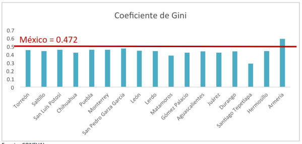
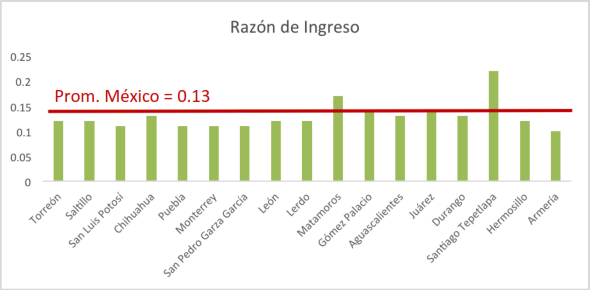
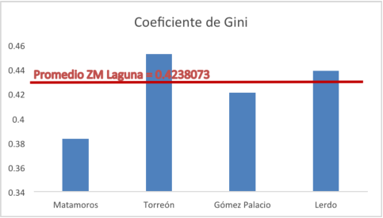
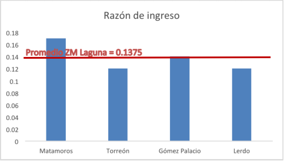

Torreón, como la zona metropolitana de La Laguna, se encuentra en una situación favorable en temas de igualdad y cohesión social. De acuerdo al Índice de Gini, el principal indicador de igualdad usado internacionalmente donde 0 representa la igualdad perfecta y 1 la total inequidad, estamos en mejores condiciones que el promedio del país. Incluso para estándares globales, nuestro coeficiente de Gini de 0.45 es relativamente bueno, tomando en cuenta a otros países de América Latina como Chile y Brasil los cuales se encuentran por arriba del 0.50, mientras algunos otros como Argentina y Estados Unidos tienen índices de 0.445 en 2010 y 0.45 en 2007 respectivamente (CIA Factbook 2014, The World Bank 2014).
Según los datos más recientes de CONEVAL (Consejo Nacional de Evaluación de la Política de Desarrollo Social), Torreón cuenta con un coeficiente de Gini de 0.452, mientras que el Banco Mundial muestra nuestro índice nacional con un valor de 0.472. Por lo tanto Torreón presenta un índice menor al nacional, lo cual es en realidad una buena noticia, pues nos dice que contamos una mejor igualdad de ingreso que otras ciudades de México.
No obstante, para formar un mejor juicio de cómo se encuentra Torreón, es necesario usar otros indicadores que complementen el diagnóstico. Los índices más comunes y utilizados por CONEVAL, son el grado de polarización y la razón del ingreso promedio del 10% más pobre y el ingreso promedio del 10% más rico. A continuación se explica cada uno:
Razón del ingreso: este indicador sirve para determinar la proporción en la que el ingreso de la población más rica sobrepasa al de la población más pobre (en pobreza extrema), es decir, mide la brecha entre los dos grupos. Comúnmente, es calculado usando el sueldo promedio del 10% o 5% de la población ubicada en la clase más alta y en la más baja. Esta razón también va de cero a uno y entre más cercano a uno se encuentre, es mejor, pues el valor de uno significa que los ingresos de ambos extremos (pobreza extrema y privilegiados) son exactamente iguales.
Grado de Polarización Social: es una clasificación generada a partir del índice de marginación del Consejo Nacional de Población (CONAPO), y no solo mide la diferencia en el ingreso, sino las diferencias en condiciones de vida de la población en cuestiones de vivienda y nivel educativo. La clasificación se muestra enseguida:
a. Polarizados: un tercio, o más, de la población vive en condiciones desfavorables y otro tercio, o más, en condiciones favorables.
- Polo de alta marginación: La mayoría vive en condiciones desfavorables.
- Polo de baja marginación: La mayoría vive en condiciones favorables.
b. Sin polo: no cuenta con ninguno de los polos de marginación.
Para ilustrar la importancia de combinar todos los indicadores, tomemos el ejemplo del municipio de México con el índice de Gini más bajo: Santiago Tepetlapa, Oaxaca. El índice del municipio es tan solo de 0.286. A simple vista, parece algo bueno que una localidad tenga un índice tan cercano a la igualdad perfecta pero, una vez enterados de la población de la localidad, la cual es de apenas 131 personas (INEGI, 2010), un simple número de pronto no es tan relevante.
Al analizar el resto de los indicadores se tiene un juicio mucho más certero sobre la situación de desigualdad. En este caso, Santiago Tepetlapa tiene una razón del ingreso de 0.22 y su grado de polarización es de alta marginación, es decir, la mayoría de sus habitantes viven en pobreza extrema y situación vulnerable. Surge la pregunta: ¿Es útil la igualdad cuando eso significa que todos somos vulnerables? Por supuesto que no, por eso precisamente es necesario el cálculo de distintos indicadores si se pretende llegar a una conclusión confiable.
Para ubicar mejor cómo nos encontramos en distribución del ingreso, comparemos a Torreón con el resto de la Región Lagunera así como con otros municipios de la República.
Tabla 1
| Coeficiente de Gini | Razón de Ingreso | Grado de polarización | |
|---|---|---|---|
| Torreón | 0.4524759 | 0.12 | Polo de baja marginación |
| Saltillo | 0.4418525 | 0.12 | Polo de baja marginación |
| San Luis Potosí | 0.4554662 | 0.11 | Polo de baja marginación |
| Chihuahua | 0.422213 | 0.13 | Polo de baja marginación |
| Puebla | 0.4556629 | 0.11 | Polo de baja marginación |
| Monterrey | 0.455091 | 0.11 | Polo de baja marginación |
| San Pedro Garza García | 0.469568 | 0.11 | Polo de baja marginación |
| León | 0.4433506 | 0.12 | Polo de baja marginación |
| Lerdo | 0.4387887 | 0.12 | Polo de baja marginación |
| Matamoros | 0.3831383 | 0.17 | Polo de baja marginación |
| Gómez Palacio | 0.4208263 | 0.14 | Polo de baja marginación |
| Aguascalientes | 0.4371458 | 0.13 | Polo de baja marginación |
| Juárez | 0.4193947 | 0.14 | Polo de baja marginación |
| Durango | 0.4362495 | 0.13 | Polo de baja marginación |
| Santiago Tepetlapa | 0.2856981 | 0.22 | Polo de alta marginación |
| Hermosillo | 0.4383958 | 0.12 | Polo de baja marginación |
| Armería | 0.590808 | 0.1 | Sin polo |
Fuente: CONEVAL
Coeficiente de Gini

Fuente: CONEVAL Nota: Para este coeficiente, menos es mejor, pues representa mayor equidad económica.
Razón de Ingreso

Fuente: CONEVAL Nota: Para esta razón, más es mejor, pues representa mayor equidad económica.
Lo anterior nos demuestra que Torreón se encuentra por debajo del promedio nacional; sin embargo, aun cuando en el índice de Gini esto es bueno, no es así en la razón de ingreso. Mientras el promedio nacional es de 0.13, Torreón tiene una razón de 0.12 lo cual indica una brecha de ingresos más amplia. Por otro lado, como se observa en la tabla, el grado de polarización de Torreón es de baja marginación, en otras palabras, la mayoría de la población se encuentra en situación NO vulnerable.
¿Cómo se encuentra en igualdad la zona metropolitana de La Laguna? En promedio, la zona metropolitana se encuentra en aún mejores niveles de igualdad, pues tiene un índice de Gini de 0.4238073 y su razón de ingreso promedio es de 0.1375. A continuación se muestra una gráfica de los municipios que integran a la zona con sus respectivos índices:
Coeficiente de Gini en la Laguna

Fuente: CONEVAL
Razón de Ingreso en la Laguna

Fuente: CONEVAL
Aun cuando nos encontramos en niveles “aceptables” de igualdad de ingresos, lo cierto es que no nos encontramos en una situación ideal. Si tomáramos en cuenta únicamente los municipios con bajo nivel de marginación y después los ordenáramos basándonos en sus índices de Gini, Torreón se ubicaría en el lugar 1,072 de los 1,192 municipios que cumplen con el filtro. Esto nos muestra cuánto nos falta por mejorar en cuestiones de igualdad.